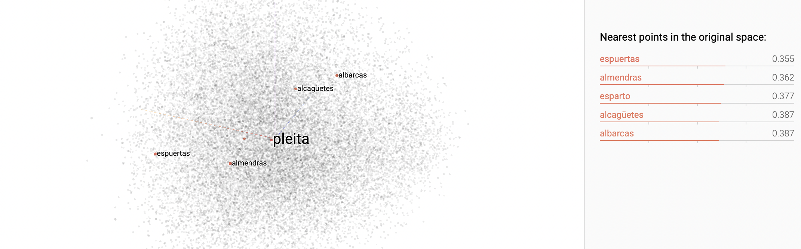

Motivación
¿Qué es el PLN?
La invención de la escritura, además de marcar el paso de la Prehistoria a la Historia, puso de manifiesto la capacidad humana de procesar y analizar el lenguaje. Por eso, se dice que la escritura es el primer ejemplo de Procesamiento del Lenguaje Natural (PLN, NLP por sus siglas en inglés).
En la actualidad, el amplísimo campo del PLN cubre todo lo relacionado con la forma en que los ordenadores "entienden", procesan o generan los idiomas que hablamos las personas, es decir, el lenguaje natural. El producto más popular de esta área de estudio son los (Chat)GPT, modelos del lenguaje generativos capaces de resumir textos, escribir poesía o solucionar problemas matemáticos. Sin embargo, en un pasado cercano, generar cualquier tipo de texto con aparente coherencia y cohesión se figuraba imposible: los problemas que intentaba resolver el PLN eran, a simple vista, mucho más sencillos. Por ejemplo:
- Lematizar automáticamente la raíz de las palabras (¿cómo hacemos que un ordenador sepa que la raíz de la palabra "dijimos" es "decir"?),
- Reconocer nombres propios de forma automática para anonimizar documentos (¿cómo entiende un ordenador entienda que «Día» se refiere al nombre de un supermercado y no a un periodo de tiempo?),
- Desambiguar la categoría gramatical de las palabras en una oración (¿es la palabra "como" la primera persona del singular del verbo “comer” o es una conjunción?)
- Representar palabras de forma numérica (vectores) para que los ordenadores puedan manejarlas sin perder sus significados.
 Vectores de palabras. Cada palabra está descrita por 150 números. Palabras con significado similar tendrán números similares y por lo tanto su distancia en el espacio vectorial será menor. En el caso de "pleita", las palabras más cercanas son "espuertas", "almendras" y "esparto".
Con la invención de la escritura hace miles de años, se asignaron símbolos escritos a información que hasta entonces solo se transmitía de forma oral y efímera. Sin embargo, esto requería un cierto entendimiento comunitario, ciertas reglas y estándares para que todos los participantes de una comunidad lingüística asociaran un determinado símbolo a un sonido. Es aquí donde podemos trazar una analogía con el campo del Procesamiento del Lenguaje Natural, pues este se ocupa de convertir información no estructurada (en época prehistórica, ideas orales; en la actualidad, palabras escritas) en una forma estructurada y procesable (antaño, la escritura en piedra, hoja o papel; hogaño, vectores numéricos que representan el significado de las ideas).
¿Puede el PLN ayudar a preservar la cultura, tradiciones y memoria histórica de nuestros pueblos?
Como hemos apuntado, el área del PLN es inmensa. Se aplica a la detección automática de mensajes de odio en Internet, al análisis de opiniones, a la traducción automática de idiomas, al procesamiento del habla (señales) o a la creación de sistemas de recomendación y publicidad, entre muchos otros. Sin embargo, los denominados Grandes Modelos del Lenguaje (LLM, por sus siglas en inglés) como ChatGPT han revolucionado el mundo del PLN. A fecha de agosto de 2024, el instituto de la Asociación Fraunhofer de Stuttgart (importantísima red de institutos de origen alemán conocida especialmente por inventos como el airbag o el formato MP3) tiene publicada en su página web una vacante para estudiantes universitarios cuya descripción reza:
" Existe una aguda escasez de mano de obra cualificada para el Mantenimiento Industrial. Los conocimientos técnicos no se están transmitiendo a las siguientes generaciones ni a legos en la materia, lo que lleva a investigar y poner en práctica nuevas tecnologías para gestionar y transferir el saber y pericia de los expertos. Un ejemplo de dichas tecnologías son los asistentes conversacionales. En este trabajo de estudios, proponemos desarrollar un chatbot especializado en el Mantenimiento Industrial que desempeñe el papel de un curtido técnico superior.Texto original en alemán
Es llamativo el problema que describen y llamativa es la solución que proponen. No obstante, nos preguntamos:
¿Qué otros saberes se están quedando en el olvido por no transmitirse a las nuevas generaciones?
¿Erramos al decir que la sabiduría de nuestros mayores, que también es la sabiduría de nuestros pueblos, no se está transmitiendo a las nuevas generaciones? En realidad, ¿cuántos jóvenes sabemos...
- qué significa el refrán “En buen año, o malo, parvas hay en mayo”?
- desde cuándo disfrutamos en La Solana de la facilidad de abrir un grifo y tener agua en nuestras propias casas? ¿Cómo se gestionaba antiguamente los suministros de agua?
- qué es la pleita y cómo se diferencia de la cordeta o el ramal?
- qué pasó en nuestro pueblo durante importantes episodios históricos, como la Reconquista, la Guerra de la Independencia, la Guerra Civil, la Transición?
Algunas de estas preguntas las podrían resolver rápidamente nuestros abuelos, otras se encuentran ya en los libros de Historia. En cualquier caso, son cuestiones que, probablemente, las futuras generaciones desconocerán. Planteamos, entonces:
¿Si un renombrado centro de investigación mundial sugiere solucionar la falta de transmisión de conocimiento técnico a las nuevas generaciones con un chatbot, por qué nuestro pueblo no puede disponer de una misma tecnología para honrar y preservar el saber popular de nuestros antepasados?
Pero, ¿cómo conseguir que un ordenador trate dudas cuya respuesta es desconocida por una parte de población cada vez más grande?
Esta última es una pregunta para el siguiente capítulo: Recopilación de datos.